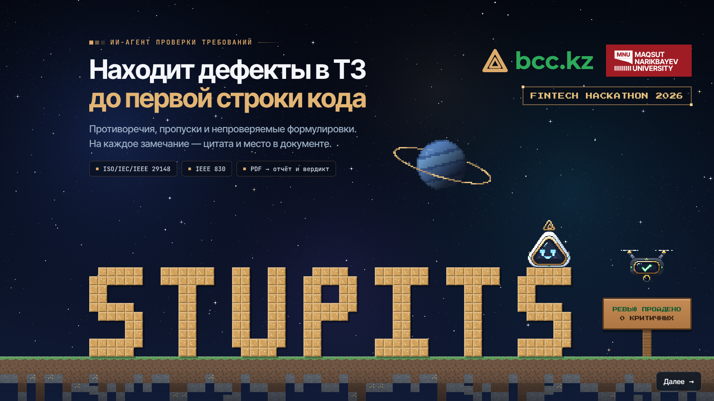
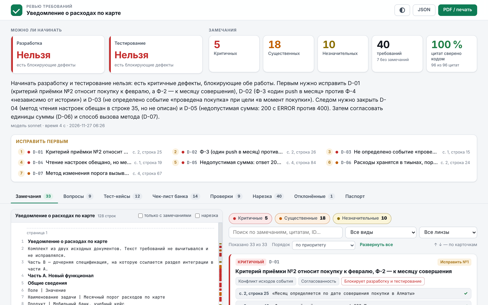
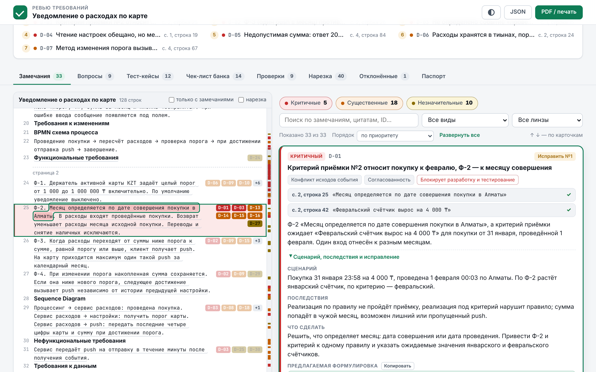
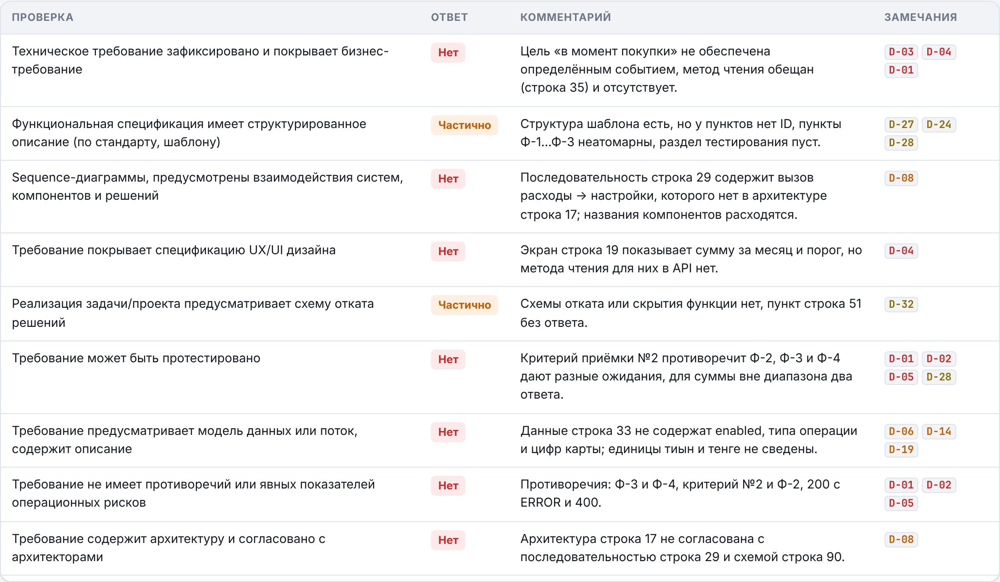

Ревью требований в банке — ручное, по чек-листу и без ссылок на место в документе. Ошибку находят на тестировании или у клиента, когда исправлять уже дорого.
Агент проводит статическое ревью по ISO/IEC/IEEE 29148 и IEEE 830 и отвечает на главный вопрос: можно ли начинать разработку и тестирование.
«Разработка: нельзя / с условиями / можно» — по правилу кода, плюс что исправить первым.
Дословная цитата, номер строки и страница, сценарий, последствия и готовая новая формулировка.
С вариантами ответа и адресатом; ответы возвращаются агенту — вердикт «до и после».
Заполненный чек-лист ревью, тест-кейсы, задачи Jira, Word с комментариями.

PDF, DOCX, MD, HTML → строки «L038|» со страницей и разделом. Правила — точные сигналы.
Требования R-01… с цитатой; чек-листы и шаблоны — исключаются.
Склеивает дубли, отклоняет ложные с причиной, ставит критичность и порядок исправления.
Вердикт — по правилу кода. MD · JSON · HTML · Word · PDF · Jira.

| БЫЛО: v1 — правила и оценка «требование × критерий» | СТАЛО: v2 — ревьюеры, судья, сверка цитат кодом |
|---|
| МОДЕЛЬ | К1–К5 | С1–С20 | ЗАМЕЧАНИЙ | ВРЕМЯ | ВЫЗОВОВ |
|---|
Шаблон банка заполнен: «Да / Нет / Частично» с комментарием и ссылками на дефекты.
Комментарии и выделения прямо в исходном документе — там, где он привык работать.
CSV для импорта: дефект, серьёзность, цитата, место, рекомендация.
Владелец отвечает вариантом — агент пересчитывает вердикт «до» и «после» и правит ТЗ.
